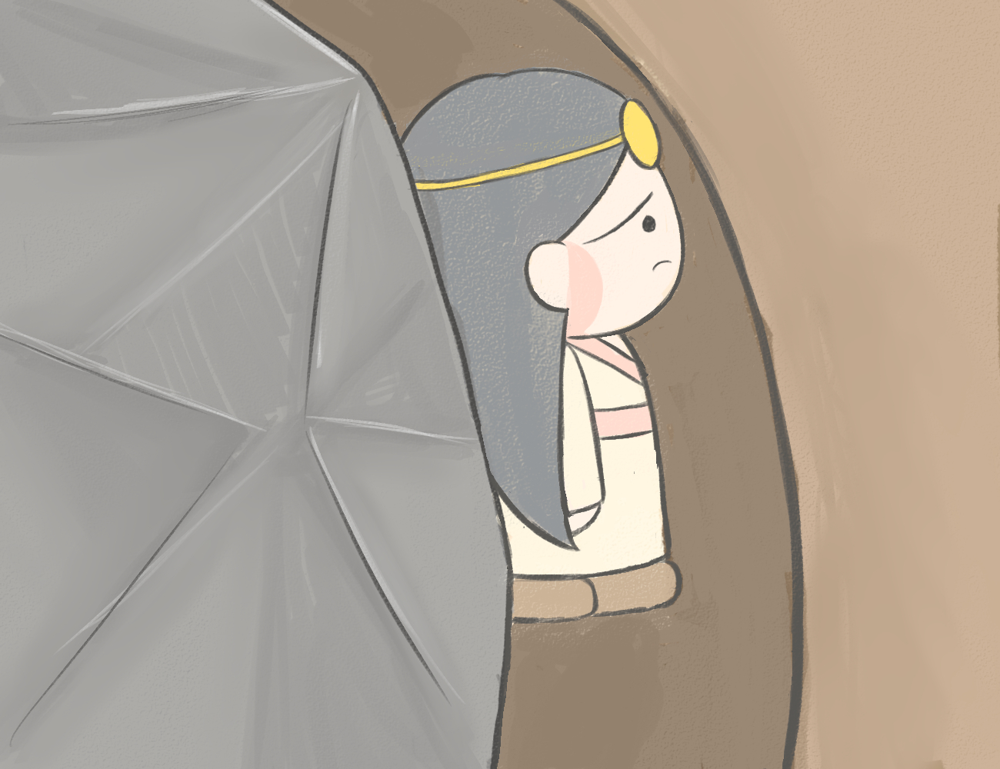
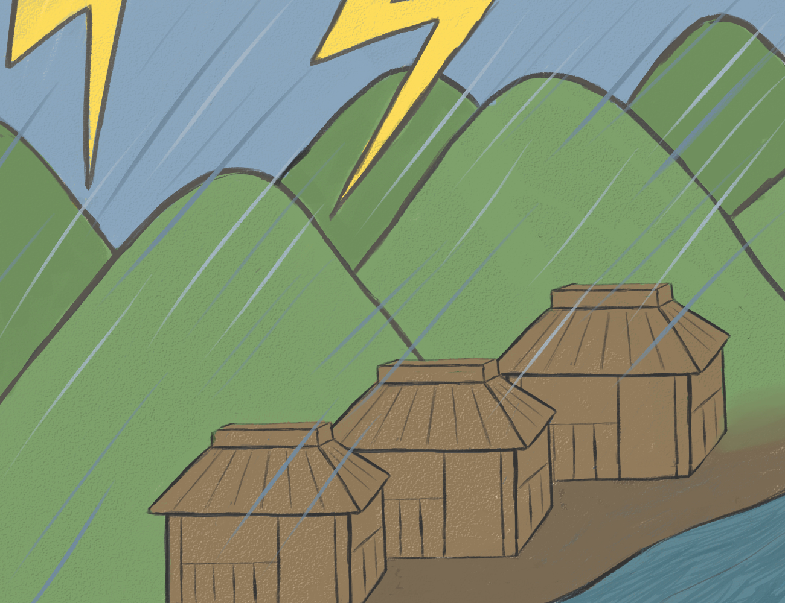
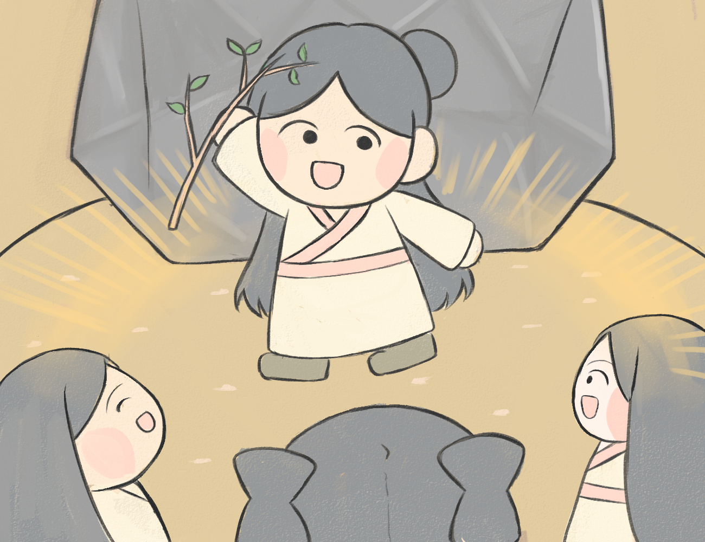
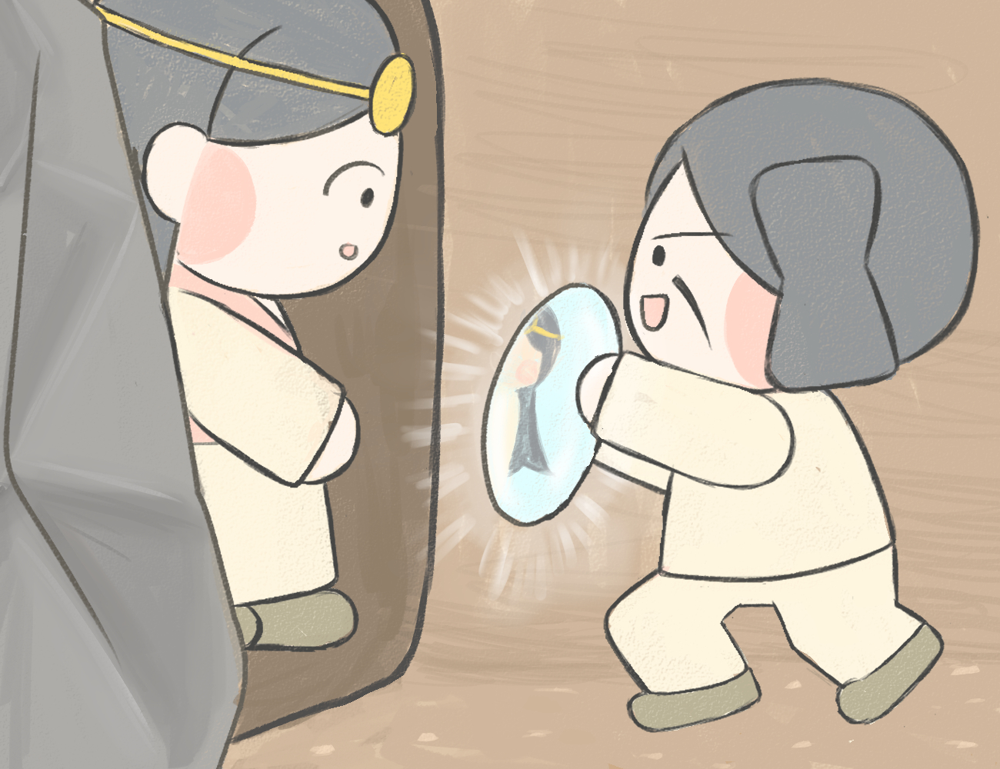
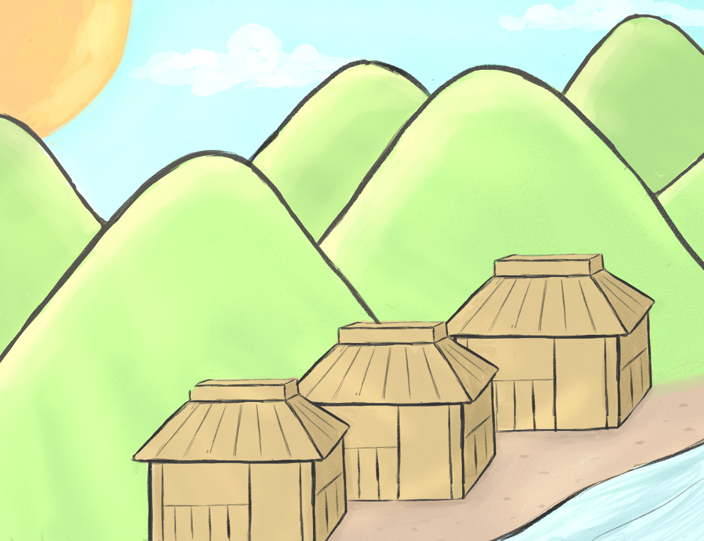

天岩戸隠れ

太陽の神様であるアマテラスオオミカミには、スサノオノミコトという弟がいました。スサノオミコトは大変な暴れん坊で、田んぼの畔を壊したり、馬の皮を剥いでしまったりと、好き勝手に振る舞い、周囲の人を困らせていました。

ある日、アマテラスオオミカミはスサノオノミコトの横暴さに腹を立て、天岩戸という洞窟に閉じこもってしまいました。

太陽の神様であるアマテラスオオミカミが閉じこもってしまったため、世の中は真っ暗になり、作物が育たなかったり、病気になったりと、次々と悪いことが起こるようになりました。

困り果てた八百万の神様たちは、アマテラスオオミカミを外に誘い出すために、天岩戸の前で、招霊の木枝を降って舞い、他の神々たちはその周りで騒ぎ立てました。

すると、天岩戸の中のアマテラスオオミカミは、「外が真っ暗でみんな困っているはずなのに、どうして外で楽しそうに騒いでいるのだろう」と思います。外の様子が気になったアマテラスオオミカミは、天岩戸を少しだけ開きます。

それを見た神々が「あなた様より立派な神様がここにおられます。」と言い、鏡でアマテラスオオミカミの顔を写しました。もう少しよく見てみようと身を乗り出した時、神々はアマテラスオオミカミの手を引き、外へ連れ出しました。

アマテラスオオミカミが外に現れた瞬間、地上には太陽の光が降り注ぎ、世の中は明るく平和な時代が戻ってきました。